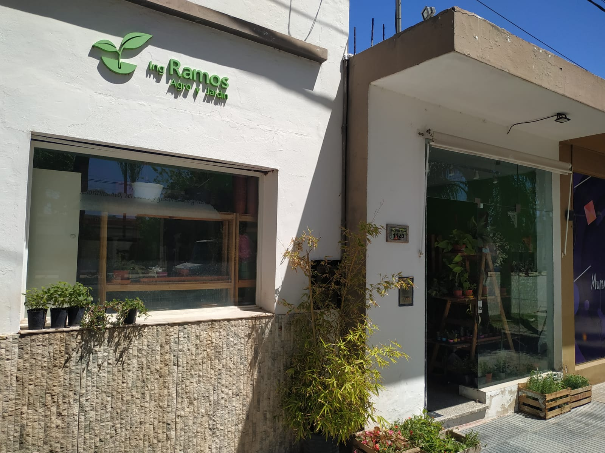

Quienes somos..
En el año 2016 surge la idea de comenzar un emprendimiento familiar de venta de plantas e insumos para jardinería en la ciudad de Morteros-Córdoba. Al notar que el negocio iba creciendo, su dueño, el Ingeniero Agrónomo Fernando Ramos en el año 2019 comenzó a incorporar nuevos servicios como el asesoramiento en plagas de jardín. En la actualidad amplio sus servicios incorporando el control de plagas urbanas, industriales y rurales.
